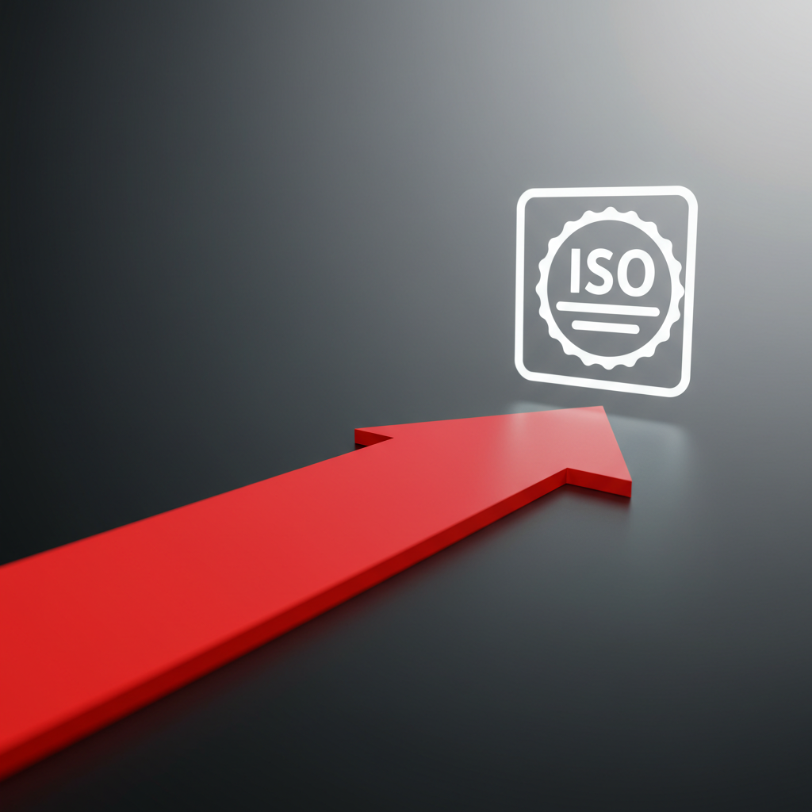
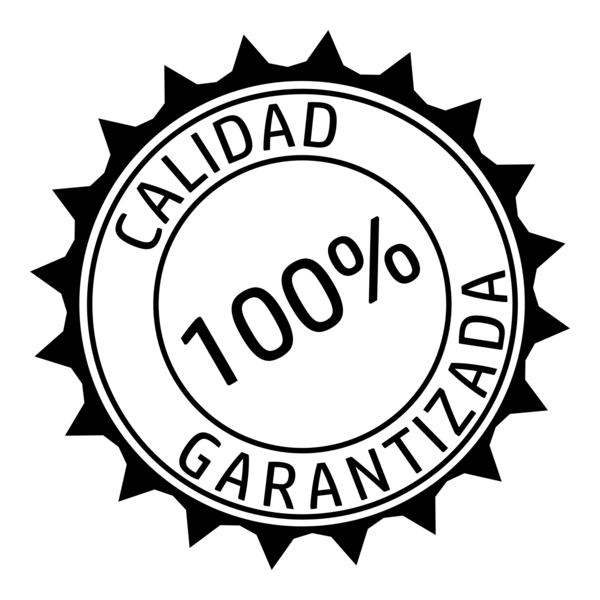

ISO 9001:2015
Calidad para el Éxito Empresarial
¿Qué es ISO 9001?
Un estándar internacional para mejorar la gestión de calidad en empresas.
Los 7 Principios de Gestión de Calidad
Enfoque al Cliente
Liderazgo
Compromiso del Personal
Enfoque basado en Procesos
Mejora Continua
Toma de Decisiones basada en Evidencia
Gestión de Relaciones
El Ciclo PDCA
Planificar
Identificar problemas y establecer estrategias.
Hacer
Implementar soluciones.
Actuar
Ajustar y mejorar.
Verificar
Medir resultados.
Beneficios de Implementar ISO 9001
- Mayor satisfacción del cliente
- Procesos más eficientes
- Reducción de errores y costos
- Mejora en la toma de decisiones
- Ventaja competitiva

Antes y Después de ISO 9001
Antes
Desorden, errores, confusión, caos.
Después
Orden, eficiencia, mejora continua.
Pasos para la Implementación
1️⃣ Diagnóstico inicial - Auditoría de procesos actuales.
2️⃣ Definir procesos clave - Documentación y estandarización.
3️⃣ Capacitación del personal - Concienciación y formación.
4️⃣ Implementación y monitoreo - Pruebas y ajustes.
5️⃣ Auditoría y certificación - Evaluación externa y certificación final.
Conclusión
ISO 9001 es una inversión en el éxito. ¡Empecemos juntos este camino!
